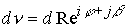
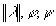
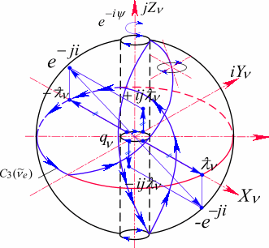
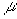
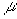

|
В. И. ЕЛИСЕЕВ ВВЕДЕНИЕ В МЕТОДЫ ТЕОРИИ
ФУНКЦИЙ ПРОСТРАНСТВЕННОГО КОМПЛЕКСНОГО ПЕРЕМЕННОГО |
|
10.17. ЭФИР И ФИЗИЧЕСКИЙ ВАКУУМ
Евклидово пространство, Риманово пространство, Пространство Минковского, Тензорное пространство могут рассматриваться как арена абсолютного пространства, в котором реализуются все явления материального вида. Эта иллюзия возникает в результате неверного математического аппарата.
Комплексное пространство в самом общем виде не может быть ареной, оторванной от материального мира, так как оно изначально содержит объекты, которые отождествляются с материальными объектами.
Рассмотрим этот момент более подробно
Первые две координаты отождествляются с пространством -квантов совместно с третьей координатной осью определяют пространство нейтрино. Вернее три координатные оси определяют пространство, в котором при определенных энергетических условий, могут локализоваться микрочастицы нейтринного уровня. Четвертая координата совместно с первыми тремя определяет пространство Лептонов. Пятая координата совместно с четырьмя первыми определяет пространство, в котором могут локализоваться барионные и мезонные микрочастицы. Координатные оси по структуре представляют вложенные друг в друга пространства без дополнительных условий
Комплексные координаты отрицают существование пустого пространства без материи как арену материи и взаимодействия. Координаты неотделимы от материи. Абсолютное пространство, которое иллюзорно возникает из декартовых координат, привело к отрицанию эфира и вакуума в теории А.Эйнштейна.
Таким образом, комплексное пространство  без локализованных частиц и микрочастиц и полей взаимодействия можно отождествить с эфиром.
без локализованных частиц и микрочастиц и полей взаимодействия можно отождествить с эфиром.
Пространство, заполненное полями взаимодействия, можно отождествить с вакуумом. Реальное пространство нельзя освободить от полей взаимодействия, в связи с этим пространство  чисто математически является эфиром. Пространство с полями взаимодействия будет соответствовать физическому вакууму.
чисто математически является эфиром. Пространство с полями взаимодействия будет соответствовать физическому вакууму.
Квантовая электродинамика, основателем которой считается П.Дирак, описывает физический вакуум как некоторое латентное состояние (скрытое) электронов и позитронов. Пространство  латентное состояние всех частиц и античастиц не только электронов и позитронов. К настоящему времени считается, что физический вакуум не имеет не массы ни заряда, ни каких-либо других физических характеристик. Однако в малых пространственных областях до см вакуум имеет значение физических характеристик отличных от нуля. С этой физической трактовкой пространство
латентное состояние всех частиц и античастиц не только электронов и позитронов. К настоящему времени считается, что физический вакуум не имеет не массы ни заряда, ни каких-либо других физических характеристик. Однако в малых пространственных областях до см вакуум имеет значение физических характеристик отличных от нуля. С этой физической трактовкой пространство  согласуется, так как пространство координатных осей отождествляется с пространством вложенных микрочастиц.
согласуется, так как пространство координатных осей отождествляется с пространством вложенных микрочастиц.
В квантовой теории поля вводится понятие “ виртуальных частиц “, которые непрерывно рождаются и сразу же уничтожаются. Виртуальные частицы считается, участвуют во взаимодействии как реальные.
Согласно формулам аннигиляция (сравни формулы 10.16.11-10.16.16) электрона и позитрона приведет к росту массы в пространстве. Также обстоят дела и с другими частицами и античастицами. В связи с этим понятие виртуальной частицы требует уточнения. Аннигиляцию в вакууме необходимо рассматривать как взаимодействие полупространств, входящих в определение микрочастицы.
Если рассматривать процесс аннигиляции электрона и позитрона, то необходимо воспользоваться формулами, которые не приводят к изменению состояния пространства
Локализованный в пространстве электрон определяется двумя отрицательно заряженными полусферами. Аналогично обстоят дела и с позитроном. Поэтому в вакууме возникают виртуальные частицы с заряженными полусферами, которые аннигилируют, не вызывая изменений и нарушения закона сохранения энергии.
Аннигиляция этих двух полусфер приводит пространство в прежнее невозмущенное состояние
Пространство вернулось в невозбужденное состояние. Фронт электромагнитной волны это разложение пространства на две полусферы разных электрических зарядов. После прохождения фронта точки пространства возвращаются в невозбужденное состояние.
Таким образом Вакуум имеет определенное физическое состояние, характеризующееся возможностью возникновения в любой его точке частиц –аналогов частицам микромира, начиная от пар нейтрино-антинейтрино, электрона-позитрона, и до протона –антипротона. Однако по структуре виртуальные частицы представляют не полное разложение пространства в отдельности на частицу и ее античастицу, так как в этом случае при
аннигиляции произошел бы переход энергии возбуждения в массу Вакуума.Поэтому, например электромагнитная волна при прохождении через Вакуум не теряет своей энергии и сложилась иллюзия, что для электромагнитной волны для ее распространения не требуется передаточная среда.
Если энергия фронта взаимодействия, проходящего через Вакуум, будет достаточной для разложения точек пространства на частицы и античастицы в полном смысле этого слова, то после прохождения фронта Вакуум останется в возбужденном состоянии, а аннигиляции возникших частиц приведет к образованию дополнительной, нейтральной массы и энергии.
Локализованные динамические образования в Вакууме, представляющие частицы характеризуются определенным набором и объемом математических операций по выделению комбинаций подпространств, отождествляемых с частицами из общего пространства. Само пространство обладает минимальным количеством таких операций при своем построении. В этом плане за каждой математической операцией, характеризующей изменение структуры пространства или входящего в него подпространства, стоит ее энергетическая характеристика.
На современном математическом языке структура геометрии задается выражением квадрата расстояния между соседними близкими точками. В декартовых координатах евклидова пространства квадрат такого расстояния имеет вид
Пространственная точка, соответствующая этому интервалу, представляет совмещение значений координат (x,y,z). Совмещение значений координат в одной точке пространства, а также выражение интервала, есть результат абстрактного представления о структуре пространства и являются допущениями, которые не соответствуют реальному физическому пространству, а абстрагируются из него как частный случай. Если квадрат расстояния равен нулю, то рассматривается одна и тажа точка.
Если рассмотреть комплекс , в котором все параметры действительные величины, то модуль этого комплекса будет равен интервалу
. Комплекс при этом имеет вид , так что . При этом, если имеем , то
. При этом, как было неоднократно показано, если модуль равен корню из нуля (при этом интервал считали бы нулем) имеем две разные точки.
Таким образом, геометрия Евклида рассматривает только структуру из точек, лежащих на поверхности сферы, радиус которой является модулем пространственного комплекса с действительными параметрами. Это заключение остается в силе и для комплексного пространства более высокой размерности, согласно формулам.
При определенных соотношениях аргументов, характеризующих вложенные друг в друга пространства разной по величине размерности, интервал равен корню квадратному из квадратов значений координат. Интервал дается в этом случае только для точек, лежащих на поверхности структурной сферы.
Если использовать не декартовые координаты, а например, сферические, цилиндрические, то квадрат расстояния между соседними точками в этих координатах принял бы вид
, где -метрический тензор евклидова пространства, а суммирование идет по одинаковым индексам .
Появление метрического тензора является следствием задания точки как совмещение в ней значений координат. Точка при этом не определяется одним комплексным параметром. Этот момент был подробно разобран выше.
Б.Риман (B.Rieman), развивая идею Н.И.Лобачевского и К.Ф.Гаусса (K.F.Gauss) ввел переменный метрический тензор  , оставив фому записи квадрата интервала прежней. Это означало, что кривизна пространства в римановой геометрии отлична от нуля. Риманова геометрия лежит в основе ОТО А. Эйнштейна. Метрический тензор определяется как функция зависимости кривизны пространства от тензора энергии –импульса.
, оставив фому записи квадрата интервала прежней. Это означало, что кривизна пространства в римановой геометрии отлична от нуля. Риманова геометрия лежит в основе ОТО А. Эйнштейна. Метрический тензор определяется как функция зависимости кривизны пространства от тензора энергии –импульса.
В РТГ А.Логунов использует геометрию, структура которой определяется интервалом
, где С –скорость света, t-время.
Геометрия, определяемая таким интервалом, называется псевдоевклидовой, а четырехмерное пространство с такой геометрией пространством Минковского (Minkowski).
Интервал в этом виде равен нулю, когда все дифференциалы равны нулю и фактически рассматривается одна точка. Во втором случае интервал принимается равным нулю, когда квадрат временной координаты равен сумме квадратов пространственных координат. Второй вариант в четырехмерном пространстве это грубейшая ошибка теоретической физики. Интервал в четырехмерном пространстве нельзя рассматривать вне зависимости от связи координат через аргументы. Это также неоднократно подчеркивалось в исследованиях.
Световой конус теории относительности имеет совершенно другую структуру, чем его равенство нулю. Световой конус характеризует разложение пространства на два не суммируемых пространства, которые образуют подпространство из мнимых точек.
Интервал при этом имеет одинаковый вид в бесконечном классе систем отсчета, движущихся одна относительно другой с постоянной скоростью, меньшей скорости света. Преобразования от одной инерциальной системы к другой, сохраняющий вид интервала, называются преобразованиями Лоренца (Lorentz). Применение такой геометрии привело к принципиально различным результатам в теориях ОТО А.Эйнштейна и РТГ А.Логунова.
В комплексном пространстве интервал Минковского дает возможность исследовать новые структурные свойства пространства-времени.
Рассмотрим комплекс
Комплекс имеет три действительных и один комплексный параметр . Пространственный интервал выступает как одна координата по отношению к временной координате
.Запишем комплекс в виде
|
(10.17.1) |
Если скорость V в структуре комплекса достигает скорости света С=V, то комплекс принимает вид
.Рассмотрим процесс выделения подпространства в комплексе
|
(10.17.2) |
Сравнивая формулы (10.17.1) и (10.17.2) приходим к однозначному выводу: подпространство движется в пространстве со скоростью света С относительно ядра комплекса. Подпространство характеризуется сингулярным значением аргумента и мнимыми пространственными точками, так как  и характеризует разложение подпространства на два не суммируемых комплекса.
и характеризует разложение подпространства на два не суммируемых комплекса.
Комплексное пространство в данном случае представляет сумму из пространства-ядра меньшей по величине размерности плюс подпространство из мнимых точек, выступающее по отношению к ядру как заряженная оболочка или полевая оболочка.
Рис. 102. электронное нейтрино .
Лептонный заряд определяется положительным изолированным аргументом , определенным в верхнем и нижнем полупространстве. Отрицательная спиральность нейтрино задается поворотом центрального комплекса (действительного радиуса) на угол  , против часовой стрелки. Пространство нейтрино представлено в координатах
, против часовой стрелки. Пространство нейтрино представлено в координатах
Ядро нейтрино есть комплекс в смысле Коши . Координаты мнимых точек

Рис. 103. Электронное антинейтрино
.
Рис. 104. Мюонное нейтрино.
Лептонный заряд определяется отрицательным изолированным аргументом , определенным в верхнем и нижнем полупространстве. Положительная спиральность определяется поворотом ядра комплекса на угол  по часовой стрелки. Координаты мнимых точек
по часовой стрелки. Координаты мнимых точек
Мюонное нейтрино имеет в ядре два комплекса. Нейтральный комплекс как результат аннигиляции нейтрино и антинейтрино . Второй комплекс ядро заряженного нейтрино 
. В данном случае положительно заряженное нейтрино с положительным лептонным зарядом где
 .
.
Рис.105. Структура заряженных подпространств электрона в комплексных координатах
Ядро электрона представлено комплексом  , где сумма углов относится к верхнему полупространству, разность к нижнему.
, где сумма углов относится к верхнему полупространству, разность к нижнему.
Лептонный заряд электрона определен положительным изолированным направлением в лептонном пространстве
Электрический заряд электрона определен отрицательным изолированным направлением в электронном пространстве
Мнимые точки электрического заряда заканчиваются лептонным образованием с положительным зарядом
В результате оболочка электрона заряжена двойным зарядом: электрическим и лептонным
По ориентации мнимых единиц 1
,i,j в пространствеЯдра могут содержать скомпенсированные заряды.
Замена комплексов ядер  на мюонное нейтрино или Тау-нейтрино дает мюон или соответственно -лептон. На рис это фиксируется заполнением ядер
на мюонное нейтрино или Тау-нейтрино дает мюон или соответственно -лептон. На рис это фиксируется заполнением ядер
Рис.106. Структура положительно заряженного пиона 
Структура представлена в координатах пространства  . Пион обладает только электрическим зарядом. Лептонный заряд аннигилирован. В центре ядро нейтрального комплекса.
. Пион обладает только электрическим зарядом. Лептонный заряд аннигилирован. В центре ядро нейтрального комплекса.
Электрический заряд отождествляется с изолированным направлением
Структура положительного каона  повторяет структуру положительно заряженного пиона
повторяет структуру положительно заряженного пиона  (рис. 106.) с добавлением в ядро нейтрального комплекса
(рис. 106.) с добавлением в ядро нейтрального комплекса  , который возникает в результате аннигиляции электрического и лептонного пространств, так что
, который возникает в результате аннигиляции электрического и лептонного пространств, так что
Для ядра каона имеем сумму ядер положительного пиона и ядра нейтрального пиона
.Рис 107 Пространство протона
.Протон обладает барионным и электрическим зарядом. Барионное пространство имеет координаты
Координатные оси  представляют цилиндрические оси, заполненные нейтринными пространствами, которые совместно образуют электронное пространство . Третья координатная ось заполнена пространством
представляют цилиндрические оси, заполненные нейтринными пространствами, которые совместно образуют электронное пространство . Третья координатная ось заполнена пространством
Барионный заряд определяется изолированным направлением
Положительный электрический заряд определяется положительным пионом  , входящим в ядро пространства протона и в пространство, образованное двумя координатными осями . Пространство пиона
, входящим в ядро пространства протона и в пространство, образованное двумя координатными осями . Пространство пиона  представлено на рис 5 входит в барионное пространство.
представлено на рис 5 входит в барионное пространство.
В барионное пространство протона может входить заряженный положительно пион  , каон
, каон 
В тоже время протон может представлять целую периодическую систему из заряженных пионов  , и нейтральных
, и нейтральных 
Мини оглавление:
[0], [1.1.1, 1.1.2, 1.1.3, 1.1.4, 1.1.5, 1.1.6, 1.1.7, 1.1.8, 1.2, 1.2.1, 1.2.2, 1.2.2.a, 1.2.2.b, 1.2.2.c, 1.2.2.d, 1.2.2.e, 1.2.2.f, 1.2.2.g, 1.2.2.h, 1.2.3, 1.3.1, 1.3.2, 1.3.3, 1.3.4, 1.3.5, 1.3.6, 1.4.1, 1.4.2, 1.5, 1.6, 1.7.1, 1.7.2, 1.7.3.1, 1.7.3.2, 1.7.3.3, 1.7.4.1, 1.7.4.2, 1.8.1], [2.1, 2.2],[3.1, 3.2, 3.3, 3.4.1, 3.4.2, 3.4.3, 3.4.4, 3.4.5],[4.1, 4.2, 4.3, 4.4],[5.1, 5.1.Рис.52, 5.2, 5.3, 5.4, 5.4.Т1, 5.4.Т2, 5.4.Т3, 5.5.1, 5.5.2, 5.5.3, 5.5.4],[6.1.1, 6.1.2, 6.2.1, 6.2.2, 6.2.3, 6.2.4, 6.2.5, 6.3, 6.4.1, 6.4.2, 6.5.1, 6.5.2],[7.1, 7.2, 7.3, 7.4, 7.5, 7.6, 7.7.1, 7.7.2, 7.8.1, 7.8.2, 7.8.3, 7.9],[8.1, 8.2.1, 8.2.2, 8.3, 8.4, 8.5, 8.6, 8.6.T1, 8.7, 8.8.1, 8.8.2, 8.8.3, 8.9.1, 8.9.2, 8.9.3, 8.10, 8.10.T2, 8.10.T3],[9.1, 9.2, 9.3, Рис.88, 89, 90, 91, 92, 93, 94, 95, 96, 97, 98, 99, 100],[10.1, 10.2, 10.3, 10.4, 10.5, 10.6, 10.7, 10.8, 10.9, 10.10, 10.11, 10.12, 10.13, 10.14, 10.15.1, 10.15.2, 10.16.1, 10.16.2, 10.17, 10.18],[11]
Размещенный материал является электронной версией книги: © В.И.Елисеев, "Введение в методы теории функций пространственного комплексного переменного", изданной Центром научно-технического творчества молодежи Алгоритм. - М.:, НИАТ. - 1990. Шифр Д7-90/83308. в каталоге Государственной публичной научно-технической библиотеки. Сайт действует с 10 августа 1998.
E-mail: mathsru@gmail.com